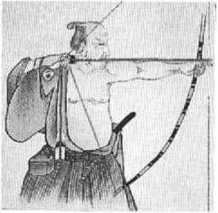

SANATINDA
ZEN
Bir Japon, yay ile ok atmayı, sanat olarak dikkate alan ve bir miras olarak ona saygı besleyen geçmişten kalmış anlamda bir spor diye anlamaz, tersine, söyleyeceklerimiz kulağa ne denli tuhaf gelse de, ona bir tapınma, dinî bir ayin gözüyle bakar. O böylece, yay ile ok atma sanatı denilince, özellikle bir vücut antrenmanı, az ya da çok bir spor yeteneği görmemekte, aksine, kökeninin manevî alıştırmalarda aranması gereken ve manevî bir hedefi tutturmadan ibaret bir yetenek anlamaktadır. (Şu hâlde nişancı, esas itibarıyla kendine nişan almakta ve belki de kendi kendine rastlatmayı başarmaktadır.)